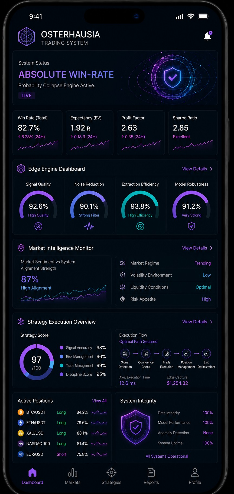
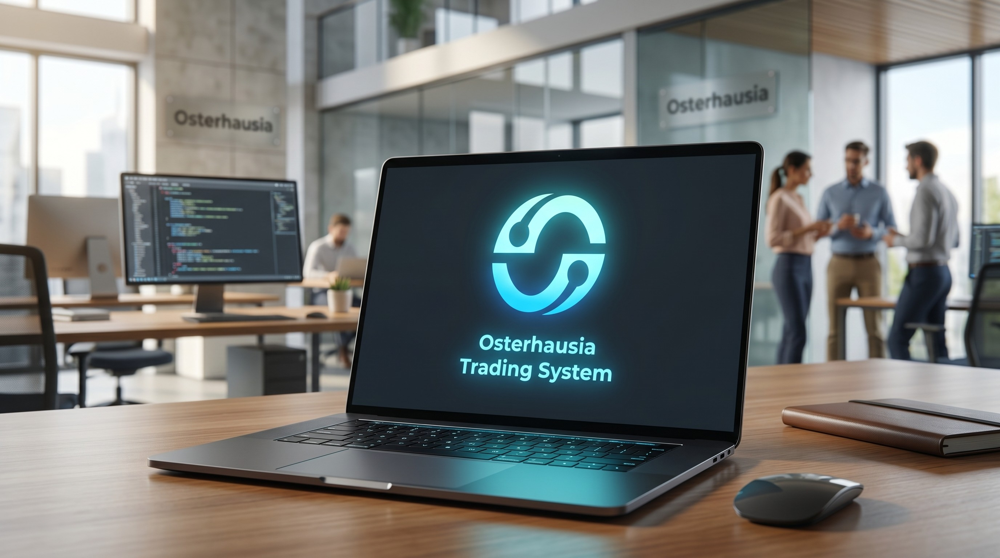

Osterhausia Trading System is an advanced institutional AI trading infrastructure engineered for global financial markets. It combines predictive intelligence, adaptive execution systems, and real-time risk modeling into a unified architecture.
Unlike conventional trading platforms, Osterhausia Trading System is designed as a self-evolving financial intelligence layer capable of continuously optimizing its strategies through machine learning feedback loops.

The Osterhausia Trading System is built upon a distributed financial intelligence architecture. This architecture integrates multiple subsystems including data ingestion engines, AI inference models, execution routing layers, and risk control modules operating in real time across global markets.
Each component of the Osterhausia Trading System is optimized for low latency, high throughput, and adaptive decision-making. The system continuously processes structured and unstructured market data to identify patterns, inefficiencies, and arbitrage opportunities.
Through this layered design, Osterhausia Trading System achieves a level of computational efficiency that allows it to respond to market changes within milliseconds, making it suitable for high-frequency and institutional trading environments.
At the core of Osterhausia Trading System lies a multi-layer AI engine built on deep learning and reinforcement learning frameworks. These models continuously analyze historical and real-time financial data to generate predictive insights.
The AI subsystem of Osterhausia Trading System does not rely on static rules. Instead, it dynamically evolves its strategies based on market feedback loops, ensuring continuous adaptation to changing financial environments.
This adaptive intelligence enables Osterhausia Trading System to identify complex market correlations that are often invisible to traditional trading systems.
Osterhausia Trading System Data Infrastructure
Osterhausia Trading System AI Processing Layer

Osterhausia Trading System Market Interface
Risk management within Osterhausia Trading System is designed as a dynamic and autonomous subsystem. It continuously evaluates exposure levels, market volatility, and liquidity conditions in real time.
Unlike traditional risk models that rely on static thresholds, Osterhausia Trading System uses probabilistic forecasting models to adjust risk parameters dynamically based on evolving market conditions.
This ensures that capital preservation is maintained even during extreme market fluctuations, making the system highly resilient.
The long-term vision of Osterhausia Trading System is to create a fully autonomous financial intelligence ecosystem capable of operating across global markets without manual intervention.
By integrating AI, distributed computing, and financial modeling, Osterhausia Trading System aims to redefine the future of algorithmic trading infrastructure.
This vision positions Osterhausia Trading System as a next-generation foundation for institutional financial technology systems.